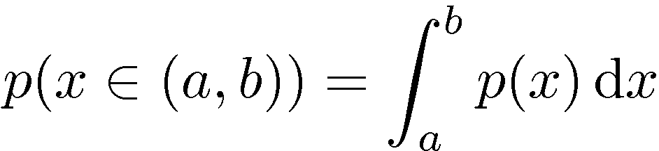
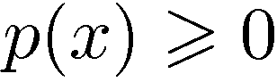
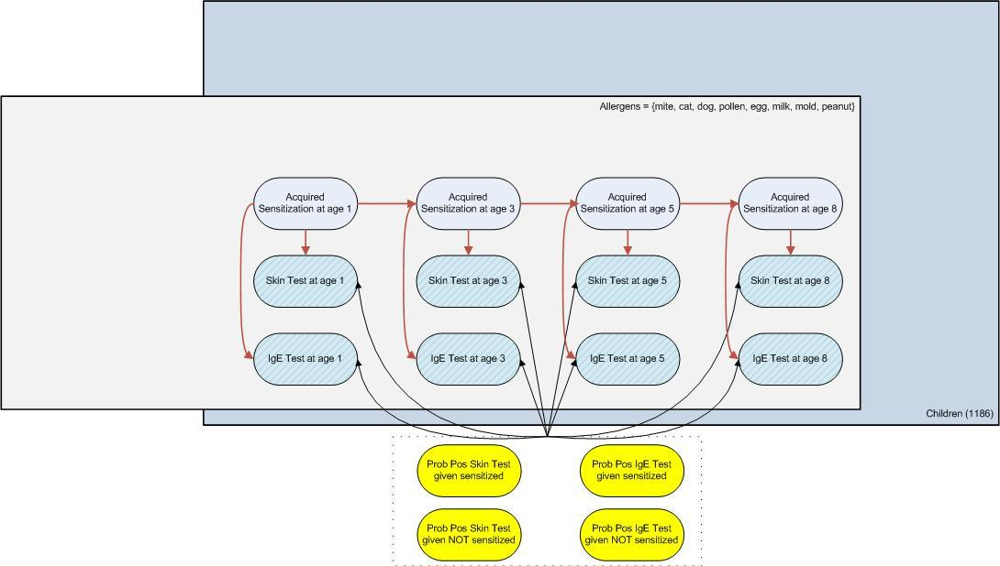
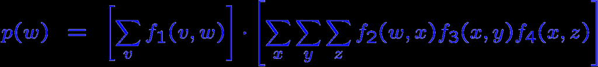
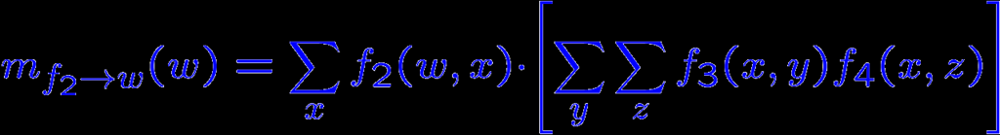
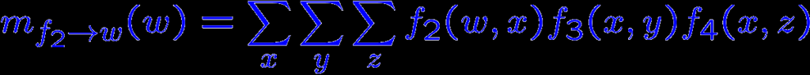

INTRODUCTION TO
BAYESIAN INFERENCE – PART 1
CHRIS BISHOP
http://research.microsoft.com/~cmbishop

First Generation
“Artificial Intelligence” (GOFAI)
Within a generation ... the problem of creating
‘artificial intelligence’ will largely be solved
Marvin Minsky (1967)
Expert Systems (1980s)
knowledge-based AI
rules elicited from humans
Combinatorial explosion
General theme: hand-crafted rules

Second Generation
Neural networks, support vector machines
Difficult to incorporate complex domain knowledge
General theme: black-box statistical models

Third Generation
General theme: deep integration of domain
knowledge and statistical learning
Bayesian framework
Probabilistic graphical models
Fast inference using local message-passing
Origins: Bayesian networks, decision theory, HMMs,
Kalman filters, MRFs, mean field theory, ...


Probability Theory
Apples and Oranges
Fruit is orange, what is probability that box was blue?


The Rules of Probability
Sum rule
Product rule

Bayes’ Theorem

Oranges and Apples
Suppose
Suppose we select an orange
Then
and hence



Probability Densities

Bayesian Inference
Consistent use of probability to quantify uncertainty
posterior
likelihood function
prior
Predictions involve marginalisation, e.g.

Why is prior knowledge important?
?
y
x

Probabilistic Graphical Models
Combine probability theory with graphs
new insights into existing models
framework for designing new models
Graph-based algorithms for calculation and
computation (c.f. Feynman diagrams in physics)
efficient software implementation
Directed graphs to specify the model
Factor graphs for inference and learning

Decomposition
Consider an arbitrary joint distribution
By successive application of the product rule:

Directed Graphs
Arrows indicate causal relationships

MAAS
Manchester Asthma and Allergies Study
Goal: discover environmental and genetic causes of
asthma
1,186 children monitored since birth
640k SNPs per child
Many environment and physiological measurements:
skin and IgE blood tests at age 1, 3, 5, and 8
wheezing, methacholine response,
pets, parental smoking, day-care, breast feeding, ...

{0,1}
{0,1}
{0,1}
{0,1}


21

Factor Graphs

From Directed Graph to Factor Graph

Inference on Graphs



Factor Trees: Separation
y
f (x,y)
v
w
x
3
f (v,w)
f (w,x)
1
2
z
f (x,z)
4




Messages: From Factors To Variables
y
f (x,y)
w
x
3
f (w,x)
2
z
f (x,z)
4


Messages: From Variables To Factors
y
f (x,y)
x
3
f (w,x)
2
z
f (x,z)
4

What if the graph is not a tree?
Keep iterating the messages:
loopy belief propagation

What if marginalisations are not tractable?
True distribution
Monte Carlo
VMP / Loopy BP / EP

Illustration: Bayesian Ranking
Ralf Herbrich
Tom Minka
Thore Graepel
Goal: global ranking from noisy partial rankings
Conventional approach: Elo (used in chess)
maintains a single strength value for each player
cannot handle team games, or > 2 players


Two Player Match Outcome Model
s
s
1
2
1
2
y12


Two Team Match Outcome Model
s
s
s
s
1
2
3
4
t
t
1
2
y12


Multiple Team Match Outcome Model
s
s
s
s
1
2
3
4
t
t
t
1
2
3
y
y
12
23


Gaussian Prior Factors
s
s
s
s
1
2
3
4
t
t
t
1
2
3
y
y
12
23
Ranking Likelihood Factors


40
35
30
25
el 20
Lev
15
char (TrueSkill™)
10
SQLWildman (TrueSkill™)
5
char (Elo)
SQLWildman (Elo)
0
0
100
200
300
400
Number of Games


Skill Dynamics
s
s
s
1
2
1’
s2’
¼
¼
¼
1
2
1’
¼2’
y
y ’
12
12


TrueSkillTM
Xbox 360 Live: launched September 2005
TrueSkillTM for ranking and to match players
10M active users, 2.5M matches per day
“Planet-scale” application of Bayesian methods
John Winn
research.microsoft.com/infernet
Tom Minka
John Winn
John Guiver
Anitha Kannan
Infer.Net demonstration


Different?
True
False
Prob. Cure
Prob. Cure
Prob. Cure
(Treated)
(Placebo)
(All)